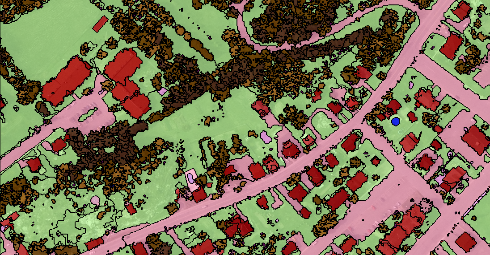
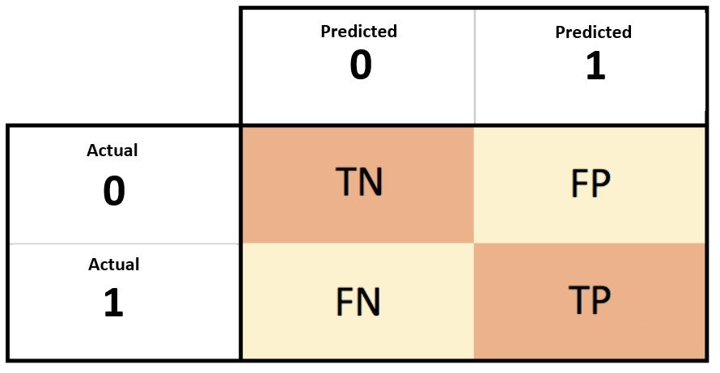
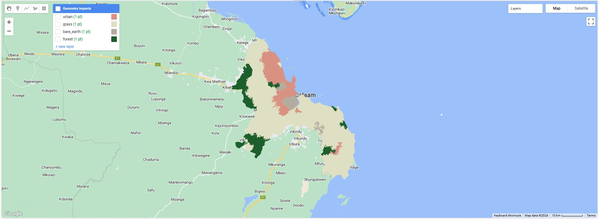
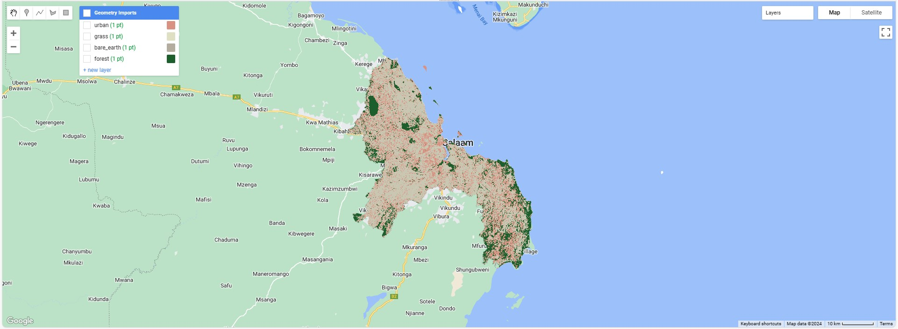

7 Week 7 - Classification II
7.1 Summary
This week’s content is still the classification of remote sensing data, introducing two new methods and evaluation indicators. In addition, issues regarding spatial autocorrelation when partitioning data are also discussed.
7.1.1 Land cover classification
7.1.1.1 Object based image analysis (OBIA)
Object based image analysis (OBIA) is a remote sensing image processing and analysis method, which is different from the traditional pixel-based analysis method. The OBIA method focuses on objects in the image (i.e., a group of adjacent pixels with similar characteristics) rather than individual pixels, and performs image classification and interpretation by analyzing the attributes of these objects (such as shape, texture, contextual relationships, etc.). This method is particularly suitable for high-resolution remote sensing data and can better handle spatial information and complex surface features in images.

7.1.1.2 Working principle
Image segmentation: Split an image into many independent objects. The goal of image segmentation is to ensure that pixels within the same object are more similar than pixels between different objects. Common methods include Simple Linear Iterative Clustering (SLIC), etc.
Object feature extraction: Extract various features for each object, including spectral features, spatial features, texture features, and contextual features.
Classification and analysis: Using the extracted features, objects are classified through classification algorithms.
Post-processing: may include optimization of classification results, correction of errors, merging of specific objects, etc., to improve the accuracy and usability of the final results.
7.1.1.2.1 Advantages and disadvantages
Advantages:
Utilization of spatial information: OBIA can effectively utilize the spatial information and contextual information of objects to improve classification accuracy and interpretation capabilities.
Reduced noise phenomena: Compared with pixel-based methods, OBIA reduces noise phenomena in classification results because it focuses on the entire object rather than individual pixels.
Strong adaptability: OBIA can adjust image segmentation and feature extraction strategies according to different application requirements, and has good adaptability.
Processing high-resolution data: OBIA is particularly suitable for processing these high-resolution data and can better identify and analyze small surface features.
Disadvantages:
Computational complexity: The computational complexity of OBIA is usually higher than that of pixel-based methods, especially in the image segmentation and complex feature extraction stages.
Parameter selection: Parameter selection during image segmentation and classification has a great impact on the final results, but often requires manual adjustment according to specific applications, which may require more professional knowledge and experience.
Software and resource requirements: Performing OBIA analysis often requires specialized software and high computing resources.
7.1.1.3 Sub-pixel analysis
Sub-pixel analysis is an image processing technique that extracts information at a scale finer than the pixel resolution of the image. This technique is particularly useful in the field of remote sensing, where each pixel of an image may cover a fairly large area on the ground, and these areas may contain many different surface types. Sub-pixel analysis allows for a more accurate estimate of the proportion of coverage of these surface types, even if they are mixed within a single pixel.
Sub-pixel analysis has a wide range of applications in the field of remote sensing, including:
Land Cover Classification: Improve the accuracy of land cover classification, especially in border areas or areas with many mixed pixels.
Resource Assessment: More accurately assess natural resources, such as vegetation cover, water resources, etc.
Environmental monitoring: Monitoring environmental changes, such as wetland degradation, deforestation, etc., even if these changes occur on a small scale.
Urban planning: In cities and suburbs, sub-pixel analysis can help identify and monitor the development of buildings, roads, and other man-made structures.
7.1.1.4 Working principle
The basic idea of sub-pixel analysis is that even within a single pixel, the mixture of different surface types affects the spectral response of that pixel. By analyzing these spectral responses, the relative proportions of each land surface type within a pixel can be inferred. This approach typically relies on spectral unmixing algorithms that attempt to decompose a pixel’s spectral signal into its component parts and estimate the proportion of coverage of each type.
7.1.1.4.1 Advantages and disadvantages
Advantages:
Improved resolution: Sub-pixel analysis can provide finer-grained information than pixel level when the spatial resolution of the image is fixed, thereby enhancing the understanding of surface features.
Solution to the mixed pixel problem: In remote sensing images, one pixel often contains multiple types of ground objects. Subpixel analysis can identify and quantify the proportions of individual components in these mixed pixels.
Cost-Effectiveness: Compared to acquiring higher-resolution remote sensing images, sub-pixel analysis is a more cost-effective method of leveraging existing low-resolution images.
Disadvantages:
Algorithm complexity: Sub-pixel analysis often requires complex algorithms, such as spectral unmixing, and the implementation and parameter adjustment of these algorithms can be complex.
Endmember selection: The accuracy of sub-pixel analysis is highly dependent on the selection of endmembers (i.e. pure ground object spectra). Improper selection of endmembers may lead to inaccurate analysis results.
Computational cost: Although subpixel analysis can avoid the cost of acquiring high-resolution images, its computational process can require high computational resources and time.
Model limitations: Most subpixel analysis methods assume that the mixing within pixels is linear, but in real situations, the mixing process may be nonlinear, which may limit the accuracy of the analysis.
Data quality dependence: The effect of sub-pixel analysis is affected by the quality of input data, such as spectral resolution, noise level, etc. Low-quality data may lead to unreliable analysis results.
Validation Difficulty: Because subpixel analysis provides information at a finer level than actual pixel resolution, validating these results on the ground can be very difficult.
7.1.2 Accuracy assessment
In classification problems, accuracy assessment is an important step in measuring the performance of the classification model. It involves comparing the model’s predictions to actual conditions and using various metrics to quantify the model’s accuracy and reliability.
7.1.2.1 Confusion matrix
The confusion matrix is a very useful tool that shows the relationship between the predictions of a classification model and the actual labels.

For a binary classification problem, the confusion matrix consists of four parts:
- True Positive (TP): The number of positive examples correctly predicted by the model.
- False Positive (FP): The number of positive examples incorrectly predicted by the model.
- True Negative (TN): The number of negative examples correctly predicted by the model.
- False Negative (FN): The number of negative examples incorrectly predicted by the model.
For multi-classification problems, the confusion matrix will be expanded to have corresponding TP, FP, TN, and FN for each category.
7.1.2.2 Metrics
7.1.2.2.1 Accuracy (overall accuracy)
Accuracy is the most intuitive evaluation indicator, which represents the proportion of samples correctly predicted by the model to the total samples.
\(\frac {TP+TN} {TP+FP+TN+FN}\)
7.1.2.2.2 Precision (user’s accuracy)
Precision is the proportion of samples predicted as positive by the model that are actually positive.
\(\frac {TP} {TP+FP}\)
7.1.2.2.3 Recal (producer’s accuracy)
Recall is the proportion of samples correctly predicted as positive examples by the model to all actual positive examples.
\(\frac {TP} {TP+FN}\)
7.1.2.2.4 F1 score
The F1 score is the harmonic mean of precision and recall, which attempts to consider both precision and recall.
\(F1 = 2 \times \frac {Precision \times Recall} {Precision + Recall}\)
7.1.2.2.5 Receiver Operating Characteristic Curve (ROC Curve) and Area Under the Curve (AUC)
ROC Curve is a graphical tool used to display the performance of a classification model under all possible classification thresholds. AUC provides an indicator to quantify model performance. The higher the AUC value, the better the performance of the model.
7.1.2.2.6 Kappa coefficient
Kappa coefficient is an accuracy metric that takes into account random consistency and compares the accuracy of actual observations to the accuracy expected from a random classifier.
The value of Kappa coefficient ranges from -1 to 1. A value of 1 indicates perfect agreement, a value of 0 indicates that the agreement is consistent with random prediction, and a negative value indicates that the agreement is less than random prediction.
Kappa coefficient is more reliable than simple accuracy and provides a more robust performance evaluation by taking into account the random consistency that may exist in the data.
In an imbalanced dataset, where some classes have far more samples than others, simple accuracy can be misleading. In this case, the Kappa coefficient can provide a more unbiased performance assessment because it takes into account the accuracy of random predictions.
In remote sensing image classification, Kappa coefficient is often used to evaluate the accuracy of classification results. By comparing the classification results with the ground truth.
The Kappa coefficient may be too sensitive to imbalanced data sets and may be difficult to interpret in some cases.
When using the Kappa coefficient, it should be combined with other performance indicators (such as accuracy, recall, F1 score, etc.) to comprehensively evaluate the performance of the classification model.
7.1.2.3 Dataset split method
7.1.2.3.1 Cross-validation
Cross-validation is a statistical method used to evaluate the performance of machine learning models on independent data sets. This method is mainly used for model selection and parameter adjustment to ensure that the model has good generalization ability, that is, it can also show good performance on unseen data. Cross-validation reduces chance in the model evaluation process by dividing the data set into parts and repeatedly using different parts to train and validate the model.
Common cross-validation methods: k-fold cross-validation, Leave-One-Out cross-validation (LOOCV), Stratified k-fold cross-validation and Time Series cross-validation.
7.1.2.3.2 Spatial Cross-Validation
Spatial Cross-Validation is a special type of cross-validation method used to evaluate model performance on data sets with spatial dependencies. In traditional cross-validation, the data are usually assumed to be independent and identically distributed, but in spatial data, this assumption is often not true because spatially close observation points may be correlated. Spatial cross-validation aims to solve this problem by spatially splitting the data to ensure independence between the training and validation sets.
Spatial cross-validation is particularly suitable for the following application scenarios:
Spatial statistics and geographical modeling: When conducting spatial data analysis, such as environmental monitoring, resource assessment, epidemiological research, etc.
Remote sensing image analysis: When processing remote sensing data, such as land cover classification, forest change detection, etc.
Geographic Information System (GIS) applications: Spatial data mining and predictive modeling in GIS.
7.1.3 Practical
This week’s practical focuses on object based image analysis and sub-pixel analysis.
The remote sensing data uses Landsat 8 data set, from 01/01/2022 to 10/10/2022, located in Dar es Salaam (the largest city and financial hub of Tanzania).

The results of OBIA show that it is generally effective in identifying cities and forests.

From the sub-pixel results, it is also not good at recognizing cities and forests.
7.2 Applications
Regarding this week’s applications, I am very interested in considering the spatial autocorrelation problem in remote sensing data classification tasks, So I will discuss several research efforts in this area below.
One study (Karasiak et al., 2022) pointed out that ignoring the spatial dependence between the training set and the test set may lead to an overestimation of the model’s generalization ability. The research team experimentally demonstrated that spatial leave-one-out cross-validation is a better strategy for providing unbiased estimates of prediction errors.
Another study (Gilcher et al., 2019) used a classification algorithm to estimate the amount of corn in each image pixel, taking into account the spatial relationships between pixels. This study combines two methods of combining adjacent pixel spatial autocorrelation with three different classification models and discusses the performance of each modeling method. Experiments have shown that the overall performance of random forest combined with Gaussian blur is better, but there are also certain differences from the real results.
There is also a study (Zhang et al., 2016) using Geary’s C to measure the degree of local spatial autocorrelation and using support vector machine for remote sensing image classification. This study combines spectral features and spatial correlation features to improve the accuracy of identifying different objects.
A study (Haouas, Ben Dhiaf and Solaiman, 2016) with the same findings also showed that combining spectral data with spatial autocorrelation can improve the classification of remote sensing images. The study found a positive impact on identifying and classifying different regions in images by using the local Moran’s I.
Furthermore, a study (Liu et al., 2006) proposes a new method to utilize local spatial information to adjust prior probabilities in maximum likelihood classification (MLC). Aims to utilize spatial features and prior knowledge to improve the accuracy of MLC methods.
The above studies all show the importance of considering spatial factors for classification problems. Whether in the data partitioning or model design process, introducing spatial features into either aspect can lead to more realistic classification results.
7.3 Reflections
This week also covered a lot of content, which enriched my knowledge in the field of remote sensing data classification. On the basis of learning various classification methods, I also learned about the indicators for evaluating these methods. More importantly, by learning how to divide the dataset, I started to think about the necessity of considering spatial autocorrelation or spatial constraints in the context of remote sensing data. And by reviewing relevant literature, I gradually came to believe that this is necessary. The unique feature of remote sensing data is that it has obvious spectral, spatial and temporal characteristics, which is very different from the data I have encountered in the past. Therefore, this also prompted me to think about how to deal with research problems not only from a methodological perspective, but also to consider the background environment where the problem is located. I find it very interesting and valuable to explore how to combine powerful machine learning or deep learning methods with remote sensing data. And those data is a true representation of real life and gives us the opportunity to solve the world’s problems. These problems are bound to be very difficult, but I believe the more aspects we think about, the higher the probability of solving it.